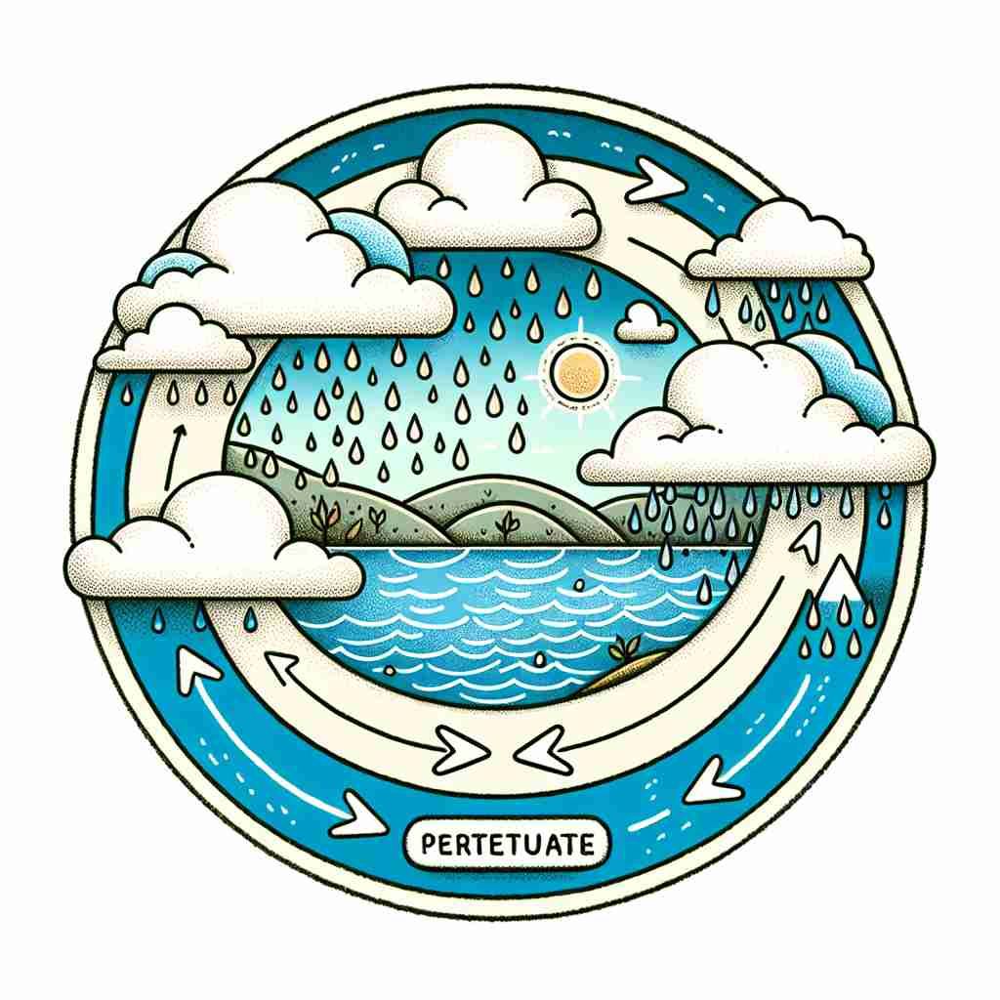

💬 We must find ways to perpetuate the cycle of water in nature. 我们必须找到方法来延续自然界中的水循环。

💬 Artists strive to perpetuate the beauty of nature in their work. 艺术家努力在他们的作品中永恒地展现自然之美。
💬 We must find ways to perpetuate the cycle of water in nature. 我们必须找到方法来延续自然界中的水循环。
💬 Artists strive to perpetuate the beauty of nature in their work. 艺术家努力在他们的作品中永恒地展现自然之美。
🧠 想象'perpetuate'是一根永不断裂的线，不断地延续下去。这个核心概念贯穿了所有含义：无论是延续记忆、传统，还是维持现状或通过繁衍延续生命，都体现了'使...持续'的核心意义。记忆时，可以想象你在努力保持这根线不断，这样就能联想到'perpetuate'的各种用法。
🔈 [pə'petʃʊeɪt][-tjʊ-]
🗝️ v. to make something continue indefinitely 使某事物持续无限期。
🎭 在一个古老的图书馆中，守护员小心翼翼地将每页书籍数字化，以确保这些古老的知识能在数码时代永远得以保存。这个动作使得这些历史知识能够无限期地继续下去，体现了'perpetuate'的这种含义。
💬 The museum aims to perpetuate the memory of the artist. 博物馆旨在延续艺术家的记忆。
🌳 该单词由词根 "pet"（寻找，追求）和前缀 "per-"（贯穿，完全）及后缀 "-ate"（动词后缀）组成，表示使某事物永久地持续下去或维持。
💡 记住 "perpetuate" 可以通过将其与 "permanent"（永久的）和 "act"（行动）联系起来理解，表示采取行动使某事维持永久。
🗝️ v. to preserve or prolong the existence of something 保留或延续某物的存在
🎭 在一个历史博物馆里，工作人员正在为一件珍贵的古代文物涂上一层保护剂。这一精心的工作旨在延长文物的存在时间，使后代也能欣赏到它，突出了'perpetuate'作为保护或延长存在的含义。
💬 These traditions have been perpetuated for generations. 这些传统已世代相传。
🤔 延续核心含义，强调保存或延长
🗝️ v. to maintain a situation or condition, especially an undesirable one 维持一种情况或状态，尤其是指不理想的状态。
🎭 在一个偏远的村庄里，议会成员们正在讨论旧的管理政策，但这些政策未能解决实际问题，反而让问题长时间得不到改善，反映了'perpetuate'在保持不良状况时的含义。
💬 This policy only perpetuates social inequalities. 这项政策只会延续社会不平等。
🤔 从核心含义延伸，强调维持现状，通常带有负面含义
🗝️ v. to reproduce or multiply 复制或繁殖
🎭 在一个热带雨林的生态保护区中，科学家们正在研究如何让某濒危物种繁衍生息。他们的目标是增加这个物种的数量，以便它能继续在自然界中繁衍生息，这就是'perpetuate'作为再生产或繁殖的含义。
💬 Some plants perpetuate themselves by producing seeds. 有些植物通过产生种子来繁殖自身。
🤔 通过繁衍来延续存在，是核心含义在生物学上的应用